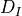
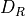
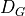
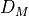
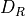
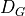
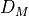
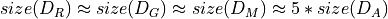
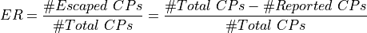

HOME¶
Tool Description¶
CLONESCAPER a lightweight yet practical code transformation approach that challenges recent ML-learning based clone detectors. In Clonescaper, we have developed 15 equivalence transformations (e.g., renaming variables, converting for-loop to while-loop, swapping code order, etc.).
To quickly find the workable solutions among all possible transformations, we adopt four different strategies to search for effective solutions, including All-Mutation (AM), Random-Mutation (RM), Genetic Algorithm (GA), Markov chain Monte Carlo (MCMC).
{kind=link}
Fig. 1 illustrates the overall workflow of Clonescaper. In general, Clonescaper consists of two phases: the mutation phase and the evaluation phase. The former takes a source code snippet as input, performs code equivalence transformations (i.e., mutation operations), and outputs the mutated code snippets. The latter evaluation phase feeds the original code snippets together with the newly mutated ones to a set of state-of-the-art clone detectors and outputs whether the new code snippets could escape from these detectors.
Implementation Details¶
To evaluate Clonescaper, we select unique code snippets from the OJClone datasets. For a given code snippet x, we generate five semantic-preserved variants. We then iteratively pair x, with a variant and feed the code pair to ML-based detectors to see whether they can determine that pair as code clones.
OJ is a C language database collected by Mou et al 1. It consists of 104 folders; each folder contains different implementations of solutions of the same problem
We select around 20% of the code from each OJClone task to form an initial dataset , and apply the four strategies (AM, RM, GA, and MCMC) to to construct new datasets  , , , and . The original OJClone dataset has many redundant problem solutions and we only use the distinct solutions after careful inspection.
, , , and . The original OJClone dataset has many redundant problem solutions and we only use the distinct solutions after careful inspection.
In the construction of the new dataset, we use the same code to generate the mutated code with different strategies. That is, each strategy takes a code C, and output a new mutated code C’ to form a code clone pair {C, C’}. Considering the random characteristics of RM, GA, and MCMC, we generate five instances of C’ for each C. Therefore, .
AM |
RM |
GA |
MCMC |
|
Clone Pairs |
10300 |
10394*5 |
10075*5 |
10395*5 |
Time(m) |
9.01 |
17.83 |
139.30 |
926.73 |
After obtaining the four new datasets, we feed them to the clone detector under test. We define a metric named Escape Rate (ER) to assess the performance of the ML-based detectors:

Clone Detectors Descript¶
FCDetector 2 trains a DNN network to detect clones of functions by capturing code syntax and semantic information through AST (abstract syntax tree) and CFG (control flow graph).
ASTNN 3 maintains an AST-based neural source code representation that utilizes a bidirectional model to exploit the naturalness of source code statements for clone detection.
TBCCD 4 obtains structural information of code fragments from AST and lexical information from code tokens and adopts a tree-based traditional approach to detect semantic clones.
SourcererCC 5 is a token-based clone detector.
NICARD 6 uses flexible, beautiful printing and code normalization features to accurately detect intentional clones.
CCAligner 7 uses a combination of sliding windows and hashes to obtain good results in the detection of large-gap type clones.
CCFinderX 8 is a token-based code clone detection system.
Deckard 9 is a tree-based clone detection tool.
CCGraph 10 is a PDG (Program Dependency Graph) based clone detector that captures syntactic and semantic information about a program.
Footnotes
- 1
Lili Mou, Ge Li, Lu Zhang, Tao Wang, and Zhi Jin. 2016. Convolutional Neural Networks over Tree Structures for Programming Language Processing. In Proceedings of the Thirtieth AAAI Conference on Artifcial Intelligence, Dale Schuurmans and Michael P. Wellman (Eds.). 1287–1293.
- 2
Chunrong Fang, Zixi Liu, Yangyang Shi, Jeff Huang, and Qingkai Shi. 2020. Functional code clone detection with syntax and semantics fusion learning. In ISSTA ’20: 29th ACM SIGSOFT International Symposium on Software Testing and Analysis,516–527.
- 3
Jian Zhang, Xu Wang, Hongyu Zhang, Hailong Sun, Kaixuan Wang, and Xudong Liu. 2019. A novel neural source code representation based on abstract syntax tree. In Proceedings of the 41st International Conference on Software Engineering. 783–794.
- 4
Hao Yu, Wing Lam, Long Chen, Ge Li, Tao Xie, and Qianxiang Wang. 2019. Neural detection of semantic code clones via tree-based convolution. In Proceedings of the 27th International Conference on Program Comprehension, 70–80.
- 5
Hitesh Sajnani, Vaibhav Saini, Jeffrey Svajlenko, Chanchal K. Roy, and Cristina V. Lopes. 2016. SourcererCC: scaling code clone detection to big-code. In Proceedings of the 38th International Conference on Software Engineering, 1157–1168.
- 6
Chanchal Kumar Roy and James R. Cordy. 2008. NICAD: Accurate Detection of Near-Miss Intentional Clones Using Flexible Pretty-Printing and Code Normalization. In The 16th IEEE International Conference on Program Comprehension, 172–181.
- 7
Pengcheng Wang, Jeffrey Svajlenko, Yanzhao Wu, Yun Xu, and Chanchal K. Roy. 2018. CCAligner: a token based large-gap clone detector. In Proceedings of the 40th International Conference on Software Engineering, 1066–1077.
- 8
Toshihiro Kamiya, Shinji Kusumoto, and Katsuro Inoue. 2002. CCFinder: a multilinguistic token-based code clone detection system for large scale source code. IEEE Trans. Software Eng. 28, 7 (2002), 654–670.
- 9
Lingxiao Jiang, Ghassan Misherghi, Zhendong Su, and Stéphane Glondu. 2007. DECKARD: Scalable and Accurate Tree-Based Detection of Code Clones. In 29th International Conference on Software Engineering. IEEE Computer Society, 96–105.
- 10
Yue Zou, Bihuan Ban, Yinxing Xue, and Yun Xu. 2020. CCGraph: a PDG-based code clone detector with approximate graph matching. In 35th IEEE/ACM International Conference on Automated Software Engineering, ASE 2020, 931–942.